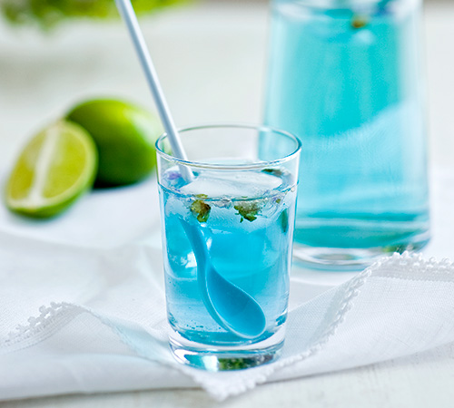

Infusões com alma
por My Cha

O mágico novo mundo das plantas e das ervas
Aliando os benefícios da ervanária aos prazeres da iguaria, bem como ao cultivo do nosso jardim secreto, MY CHA criou uma gama de infusões únicas para as nossas necessidades tanto físicas como emocionais. Se precisar de energia, de carinho, ou simplesmente de se recompor de um pequeno excesso, é fácil escolher a infusão certa.
São uma pura delícia para saborear e deixar-se transportar pelos perfumes suaves: desfrute de todos os benefícios das plantas, começando pelo prazer! Para si, ou para partilhar.
Em casa, no escritório, num cocktail ou numa sobremesa…as infusões saem das rotinas e surpreendem…uma nova experiência para todos os momentos das nossas vidas.
MY CHA também adora trabalhar por medida: para um restaurante gastronómico, um hotel de luxo ou de bem-estar, um spa, um evento muito especial...
Compostas por plantas medicinais e aromáticas de origem controlada e escolhidas em função das suas virtudes e sabores, as infusões MY CHA não contêm cafeína nem teína.
São totalmente naturais!
Sem aromas artificiais…
Todos os sabores já estão na natureza e é bom encontrá-los intactos.
Sem corantes…
O azul da infusão Blue moon… O cor-de-rosa de Madame a besoin d’énergie… São tons das flores que estão na base da sua composição: a natureza não para de nos surpreender!
Sem conservantes…
Protegidos do ar e da luz, no seu pacote com fecho hermético, as infusões, os sabores e as emoções apenas esperam por nós.
A alma de My Cha

Laetitia Arrighi de Casanova é a alma mater de My Cha.
Apaixonada pelas plantas em todas as suas formas, junta uma actividade de consultoria à criação das infusões My Cha e estudos de fitoterapia.
Vive em Lisboa há cerca de uma década, mantendo uma forte ligação a Paris.
“As infusões nascem das necessidades que observo ao meu redor. Estou constantemente a aprender e a desenvolvê-las; consequentemente a gama MY CHA está sempre em evolução.”